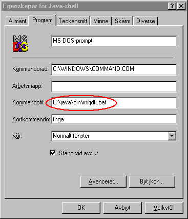
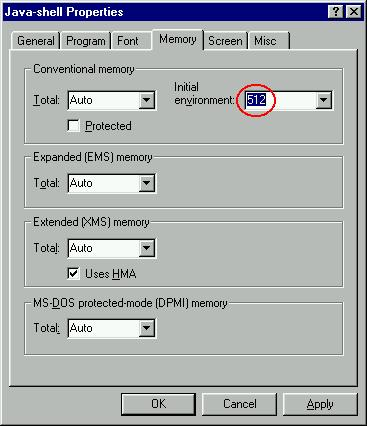
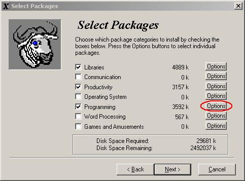
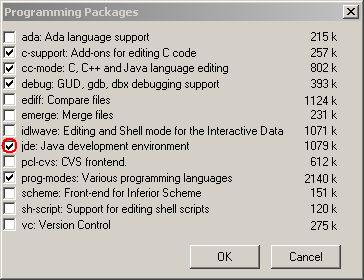
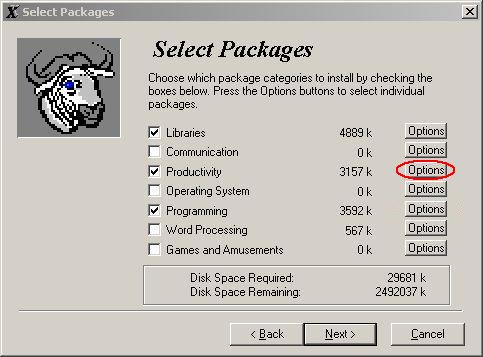
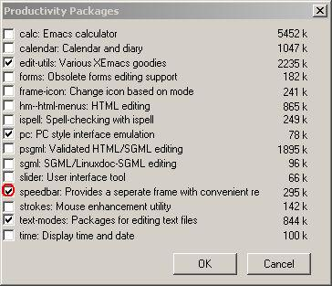

se.lth.cs.pt
Anvisningarna gäller för dig som kör Windows 98, men kan säkert hjälpa även dig som kör Windows NT eller Windows 2000.
Jag kommer inte att ge någon annan hjälp än den text som följer.
c:\):
Välj sedan hela tiden de rekommenderade filnamnen nedan.
c:\java\jdk1.3 du skapade ovan. Du startar installationen genom att
köra j2sdk1_3_0-win.exe, som är ett självinstallerande program. Programmet
kommer att fråga var du vill installera jdk.
Ladda hem zip-filen och packa upp den i katalogen packages (som
du skapade tidigare, se figur ovan).
När du packat upp se.lth.cs.pt-paketet skall du ha följande
katalogstruktur i packages:

.bat-fil, förslagsvis med namnet
initjdk.bat i katalogen c:\java\bin, med ungefär
följande innehåll (filen kan se lite krånglig ut, den är gjord för att det skall
vara lätt att uppgradera till nya jdk-versioner): @echo off set javaHome=c:\java set jdkHome=%javaHome%\jdk1.3 set javaBin=%javaHome%\bin set jdkBin=%jdkHome%\bin set path=%jdkBin%;%javaBin%;%path% set classpath=.;%javaHome%\packages;%jdkHome%\lib\tools.jar;%jdkHome%\jre\lib\rt.jar @echo "JDK1.3 installerat"Skapa sedan en genväg till
C:\WINDOWS\COMMAND.COM och öppna
"Egenskaper/Properties", gå till "Program"-fliken och skriv in namnet på
.bat-filen ovan på raden Batch file:

Gå sedan till fliken "Minne/Memory" och ange Initial environment
till minst 512.

Stäng fönstret genom att klicka i OK-knappen.
Du kan nu starta ett Java-fönster genom att dubbelklicka på den genväg du
skapat.
Att installera XEmacs
För att installera XEmacs kör du
programmet xemacs-21.1.9-i586-pc-win32.EXE.
Om du vill ha Java-stöd (och det vill du!) måste du installera två speciella
paket, jde och speedbar. Det gör du genom att när du
under installationen får upp följande fönster:

klicka på knappen "Options" vid Programming.
Du får då upp följande fönster:

Klicka i rutan för jde (den skall vara markerad när du är
färdig).
Klicka i OK-knappen och klicka sedan i
"Options"-knappen för Productivity.

Markera speedbar:

Klicka OK och gör färdigt installationen.